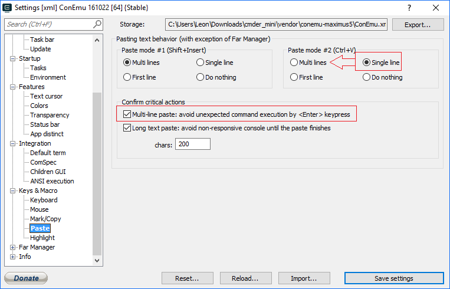
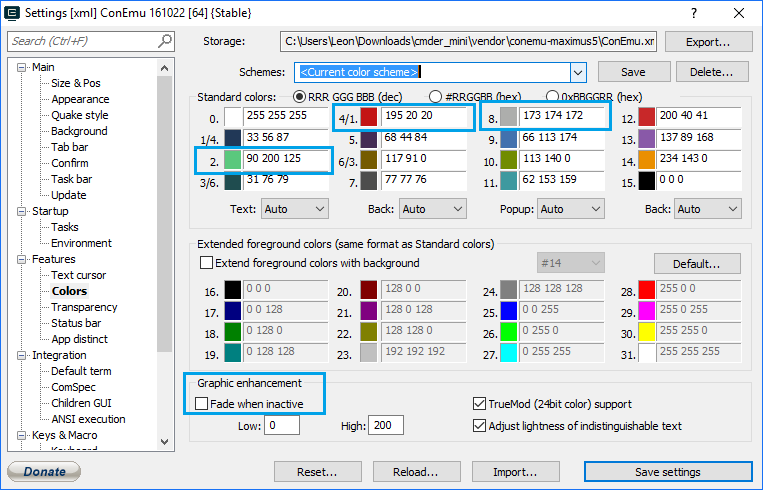
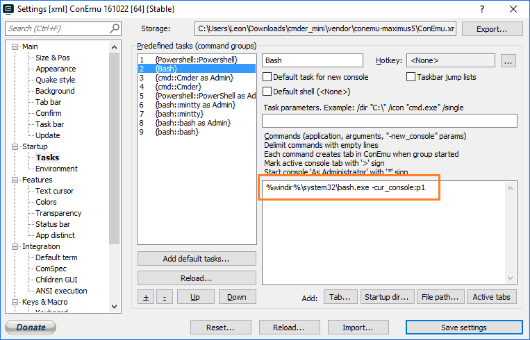
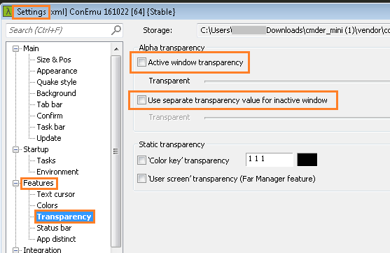
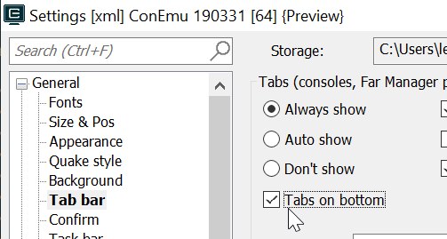

Cmder
Cmder relies on Conemu to create a beautiful console experience on windows.
download
from http://cmder.net/
Try downloading "mini" -- see if it works suitably.
insert text
What matters the most: How do you insert?
Paste with Shift Insert -- which on a macbook air is "fn shift enter"
Can also use Ctrl V or Right Click, though they give slightly different behavior....

Also turn on "Automatically remove newline when pasting single line." That looks good.
Using Powershell with Cmder...
Set cmder to load powershell by default, via:
Settings -> Startup -> Tasks
Find the {Powershell::Powershell} task and move it Up Up Up to the top.
Change the Commands to:
PowerShell -ExecutionPolicy Bypass -NoLogo -NoExit -new_console:d:"C:\users\leon\dropbox\secretgeek"
...instead of the default task parameters which swap in a different profile.ps1 file, etc.
Then, in:
Settings -> Startup
Put the startup options as
"Specified Named task" -->
Color schemes
Their favorite color scheme is the muted tones of the "Monokai" color scheme.
If you want a fully light colored scheme -- keeps people awake in talks -- try "Tomorrow"
I did mess with it a little to get the colors how I wanted them in some circumstances.

Arrow keys when running bash.exe (windows subsystem for linux)
This is a known issue lodged with ConEmu...
https://github.com/Maximus5/ConEmu/issues/811
And traced back to a fault in the design of bash.exe
https://github.com/Microsoft/BashOnWindows/issues/111
To fix it, I added a "{Bash}" task (in Settings -> Startup -> Tasks) with Command equal to:
%windir%\system32\bash.exe -cur_console:p1

I also added a bash function to my powershell profile.ps1 which reads:
function bash() {
& $env:windir"\system32\bash.exe" -cur_console:p1
}
Fade when inactive
Change this in settings -> Features -> Color -> Graphic enhancement -> Fade when inactive.
(Included in one of the screenshots above)
is cmder slow over rdp?
is cmder slow over remote desktop? is cmder slow via terminal services?
Turn off transparency! Right this moment! Kill it!
It's under Settings > Features > Transparency -- to wit:
Settings > Features > Transparency > Active window transparency <- uncheck!
Settings > Features > Transparency > Use separate transparency value for inactive window <- uncheck!

Cmder will no longer be slow to paint over remote connections.
Tabs on bottom
General > Tab bar > Tabs on Bottom <-- check it on!
